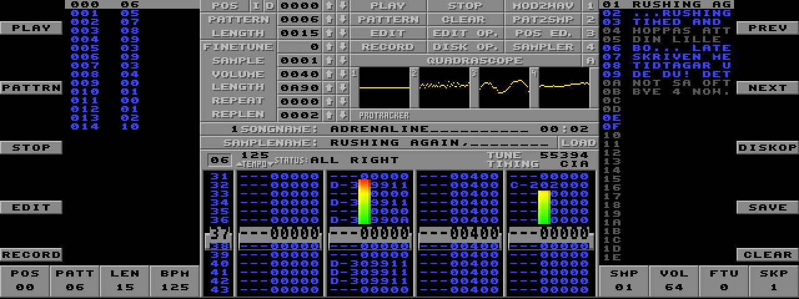
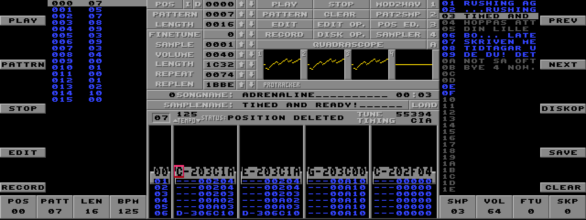
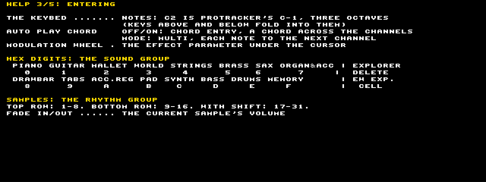
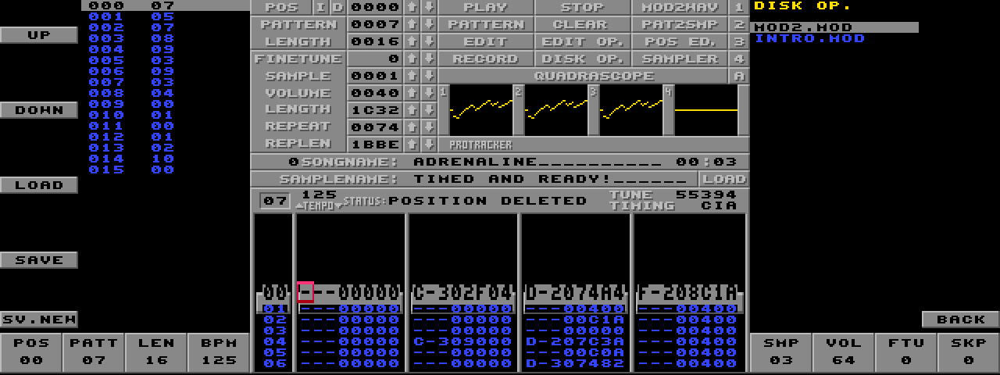
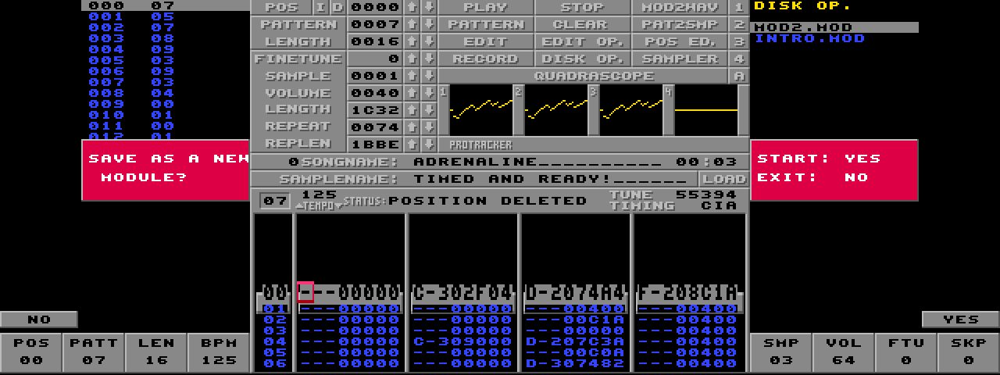

ProTracker is the Amiga's classic music tracker. A song (a module, a .MOD file) is a list of
positions. Each position plays a pattern of 64 rows, and each row has four channels. A cell of a channel
holds a note, the number of the sample it plays (1-31), and an effect: a command digit and a two-digit parameter, all in
hexadecimal. The cursor moves through the cells, and the keyboard enters notes and digits. On the Amiga that keyboard
is a computer keyboard and a mouse.
On the KN7000 the same program runs on the instrument. Its replayer plays the four channels through the instrument's effects processor (DSP), and its screen is drawn on the LCD. The KN7000 has no computer keyboard and no mouse, so the panel and the keybed do their work. The keybed plays and enters notes. The panel's buttons were chosen so that what each one does on the KN7000 suggests what it does in ProTracker: the sequencer's buttons are the song, the SOUND GROUP is a keypad of hex digits, PANEL MEMORY stores and recalls effects, and so on (section 4).
Every module the Amiga's ProTracker makes or plays with four channels and 31 samples works: ProTracker, NoiseTracker and Soundtracker modules. The examples in this manual use the music of Pinball Fantasies.
The folder PROTRACK\ at the card's root holds the program and your modules:
| file | what |
|---|---|
KN7APP.BIN, PT.BIN | the program |
MANIFEST.TXT | the name the program menu shows: "ProTracker 2.3D" |
MODS.TXT | the modules, one file name a line, in the order the module buttons step through them |
*.MOD | the modules, with 8.3 names (TABLE1.MOD, PTNEW01.MOD) |
To add a module, copy it into PROTRACK\ and add its name as a line of MODS.TXT. The program
cannot list a folder by itself. When it saves a new module it adds the name to MODS.TXT for you.
KN7LOAD.CNV.MODS.TXT loads and plays. Its samples are sent to the DSP first: this takes
between half a second and two seconds, and the status line says SENDING SAMPLES...Hold EXIT for 1.5 seconds. The instrument shows its message, then "Continue Next?": answer NO (right button 4) to go back to the instrument. A brief press of EXIT is ProTracker's Esc instead (section 11).
The LCD is 640 dots wide and ProTracker's screen 320, so ProTracker sits in the middle, as it looks on the Amiga (its pattern shows 13 rows instead of 15: the LCD is 240 lines high, the Amiga's screen 255). The 160 dots either side show what ProTracker hides on the Amiga behind other screens:

ProTracker's own screen works as on the Amiga: POS, PATTERN and LENGTH at
the top left, the current sample's number, volume, length and loop below them, the quadrascope (or spectrum
analyzer) at the top right, the song's and the sample's names, the status line, the tempo (BPM), and the pattern with
its VU meters. Its buttons (PLAY, DISK OP. and the rest) are drawn but not pressed: the panel does that.
The panel's sections each take one of ProTracker's jobs. The two drawings show the left and right halves of the panel; the colours are the jobs:
| to | press | ProTracker's |
|---|---|---|
| play the song from the current position | START/STOP, SEQUENCER PLAY or LCDL 1 | right Amiga key |
| play the current pattern over and over | SYNCHRO & BREAK or LCDL 2 | right Alt |
| stop | START/STOP, PADS STOP or LCDL 3 | space |
| the next or previous module | LCDR 2, LCDR 1 | Disk Op. |
| change the tempo while playing | turn TEMPO/PROGRAM, or TAP TEMPO four times on the beat | the BPM arrows |
| go to another position while playing | MUTE UP 1 / MUTE DOWN 1 (POS) | the POS arrows |
| mute or hear a channel | MUTE DOWN / MUTE UP 5, 7, 9, 11 (under channels 1-4) | the mute buttons |
| solo a channel | MUTE DOWN 6, 8, 10, 12, or SOLO for the cursor's | right-click a mute button |
| scope or spectrum | OTHER PARTS/TG | click the visualizer |
The keybed always plays: a key sounds the current sample on the cursor's channel, at its note. While a song plays, that channel's own notes take over again at the next note.
Press EASY REC (or LCDL 4). Playing stops, and the red cursor appears on the middle row. Press EASY REC again, or EXIT briefly, to leave the edit mode. While a pattern is playing, EASY REC starts the record mode instead (LCDL 5 too): the pattern plays over and over and what you enter goes into it at the row being played.
| to move | press |
|---|---|
| a row up or down | turn TEMPO/PROGRAM |
| 16 rows | PAGE UP, PAGE DOWN |
| to row 0, 16, 32, 48 | VARIATION 1-4 (SHIFT + VARIATION stores the current row in that button) |
| to row 63 | INTRO & ENDING 2 |
| a column left or right | PART SELECT LEFT, PART SELECT RIGHT 1 |
| to the next channel | PART SELECT RIGHT 2 |
| to channel 1-4 | MUTE UP 6, 8, 10, 12 (the pair under that channel) |
Each channel has six columns, as in ProTracker: the note, the sample number's two digits, the effect's command and its parameter's two digits.

| to | press | ProTracker's |
|---|---|---|
| delete the note (on the note column) or the effect (elsewhere) | SOUND EXPLORER | Del |
| delete the whole cell | EW EXPANSION (or SHIFT + SOUND EXPLORER) | Shift+Del |
| insert an empty row at the cursor (the track's rows below move down) | FILL IN 1 (SHIFT: all four tracks) | Shift+Return |
| delete the row at the cursor (the rows below move up) | FILL IN 2 (SHIFT: all four tracks) | Backspace |
| transpose the note a semitone | TRANSPOSE -/+ (SHIFT: the whole track) | Edit Op. 1 |
| transpose the note an octave | R1/R2 OCTAVE -/+ (SHIFT: the whole track) | Edit Op. 1 |
| cut, copy, paste the track | PAD 1, PAD 2, PAD 3 | Shift+F3, F4, F5 |
| cut, copy, paste the pattern | PAD 4, PAD 5, PAD 6 | Alt+F3, F4, F5 |
| undo the last change | PADS BANK (again: redo) | (pt2-clone's undo) |
| put an effect macro into the cell | PANEL MEMORY 1-8 | Alt+1-0 |
| store the cell's effect as a macro | SET, then PANEL MEMORY 1-8 | Ctrl+1-0 |
| see the macros | BANK VIEW | |
| play one row and move on | ONE TOUCH PLAY | Return |
The song is the list of positions shown in the left column. Each line is a position and the pattern it plays.
| to | press |
|---|---|
| go to another position | MUTE UP 1 / MUTE DOWN 1 (POS) |
| change the pattern this position plays | MUTE UP 2 / MUTE DOWN 2 (PATT) |
| make the song longer or shorter | MUTE UP 3 / MUTE DOWN 3 (LEN) |
| insert a position (a copy of this one, after it) | CONDUCTOR RIGHT 2 |
| delete this position | SHIFT + CONDUCTOR RIGHT 2 |
| edit another pattern without changing the song | CONDUCTOR LEFT / CONDUCTOR RIGHT 1 (the pattern number at the screen's bottom left) |
| go to the song's start | INTRO & ENDING 1 |
| the tempo | MUTE UP 4 / MUTE DOWN 4 (BPM), TAP TEMPO, or the wheel while playing |
As in ProTracker, the tempo and speed are not stored in the module's header: a song sets them with the F command in its first row (for example F06 for speed 6, F7D for 125 BPM). To keep a tempo, enter it as an Fxx effect.
The current sample is the one notes play and enter. Choose it with the RHYTHM GROUP: its top row is samples 1-8 and its bottom row 9-16; with SHIFT, 17-31. Or step through them with MUTE UP 13 / MUTE DOWN 13 (SMP). The right column lists all 31.
| value | pair | with SHIFT |
|---|---|---|
| SMP, the sample | MUTE 13 | REP, the loop's start (hex, bytes) |
| VOL, the sample's volume (0-64); also FADE IN / FADE OUT | MUTE 14 | RPL, the loop's length (hex, bytes) |
| FTU, its finetune (-8 to +7) | MUTE 15 | MSP, the metronome's speed (rows a beat) |
| SKP, the edit skip (0-9) | MUTE 16 | MCH, the metronome's channel (0: off) |
The samples' sounds themselves cannot be edited or recorded on the KN7000: there is no sample editor. The metronome (SOUND ARRANGER OFF/ON, and SET for the cursor's channel) plays sample 1F every few rows, as ProTracker's does.

PTNEW01.MOD (or the next free number) and
adds it to MODS.TXT. Your original stays as it was.
Modules are saved as ProTracker 2.3D saves them ("M.K.", 31 samples), so they play in ProTracker, in every other tracker, and in pt2-clone on a computer.
This makes a short four-bar beat from scratch inside a module, using its samples.
MODULE SAVED !.| control | does | with SHIFT |
|---|---|---|
| LCDL 1-5 (main) | PLAY, PATTERN, STOP, EDIT, RECORD | |
| LCDR 1-5 (main) | previous module, next module, Disk Op., SAVE, CLEAR | |
| MUTE 1-4 | POS, PATT, LEN, BPM up/down | edited pattern, PATT, LEN, speed |
| MUTE 5, 7, 9, 11 | channel 1-4: UP heard, DOWN muted | |
| MUTE 6, 8, 10, 12 | channel 1-4: UP the cursor there, DOWN solo | |
| MUTE 13-16 | SAMPLE, VOLUME, FINETUNE, edit skip up/down | REPEAT, REPLEN, metronome speed, channel |
| PAGE UP/DOWN | 16 rows (Disk Op.: 16 modules; HELP: pages) | |
| DISPLAY HOLD | SHIFT | |
| EXIT | briefly: back (page, macros, edit mode); held 1.5 s: the end | |
| HELP | five pages of help (PAGE UP/DOWN, the wheel); again or EXIT: back | |
| OTHER PARTS/TG | quadrascope or spectrum analyzer | |
| TEMPO/PROGRAM | the row; while playing, the tempo; in the Disk Op., the module | the value under the cursor |
| TRANSPOSE -/+ | the note a semitone | the track a semitone |
| R1/R2 OCTAVE -/+ | the note an octave | the track an octave |
| PART SELECT | LEFT: cursor left; RIGHT 1: cursor right; RIGHT 2: next channel | |
| CONDUCTOR | LEFT/RIGHT 1: the edited pattern; RIGHT 2: insert a position | RIGHT 2: delete the position |
| SOLO | solo the cursor's channel (again: all heard) | |
| SOUND GROUP | hex digits 0-7 (top), 8-F (bottom) | |
| SOUND EXPLORER | delete the note or the effect | delete the cell |
| EW EXPANSION | delete the cell | |
| RHYTHM GROUP | samples 1-16 | samples 17-31 |
| AUTO PLAY CHORD | OFF/ON: chord entry; MODE: MULTI | |
| MULTI | MULTI | |
| SOUND ARRANGER | OFF/ON: metronome; SET: on the cursor's channel | |
| ONE TOUCH PLAY | play one row and move on | |
| FADE IN / OUT | the sample's volume up / down | |
| TAP TEMPO | the tempo from taps, a tap a beat | |
| SYNCHRO & BREAK | play the pattern over and over | |
| VARIATION 1-4 | row 0, 16, 32, 48 | store the current row there |
| FILL IN 1 / 2 | insert / delete a row in the track | in the pattern |
| INTRO & ENDING 1 / 2 | the song's start / row 63 | |
| START/STOP | play the song, or stop; a question: yes | |
| PADS 1-6 | cut, copy, paste the track (1-3) and the pattern (4-6) | |
| PADS BANK / STOP | undo / stop | |
| SEQUENCER PLAY / EASY REC | play the song / the edit mode (playing: record) | |
| DISK, SD | the Disk Op. | |
| CUSTOMIZE | options: blank zeroes, dots, sharps or flats, velocity as Cxx, the scope | |
| PANEL MEMORY 1-8 | the effect macro into the cell (after SET: store) | |
| SET | store a macro (then 1-8); a question: yes | |
| BANK VIEW | show the macros | |
| keybed | notes (C2 = C-1); chords with chord entry | |
| sustain pedal | a rest | |
| modulation wheel | the effect parameter under the cursor | |
| left to the instrument | the volume sliders, CONTRAST; nothing: DEMO, MUSIC STYLIST, MUSIC STYLE ARRANGER, SPLIT POINT, TECHNI-CHORD, PROGRAM MENUS, CUSTOM PANEL, FAVORITES, NEXT BANK, PADS AUTO SETTING, the PART and GLOBAL EFFECT buttons (but MULTI), the pitch-bend wheel | |
While ProTracker runs, the instrument's own functions behind these buttons are kept from the instrument: pressing PANEL MEMORY 1 puts an effect into a cell and does not recall a registration.
An effect is a command digit and a two-digit parameter (x and y are its digits, xx both). Effects work on the channel they are in, at that row.
| effect | what it does |
|---|---|
0xy | arpeggio: the note, +x, +y semitones in turn |
1xx | slide the pitch up |
2xx | slide the pitch down |
3xx | slide to the note (portamento) |
4xy | vibrato: speed x, depth y |
5xy | 3 (go on) and volume slide |
6xy | 4 (go on) and volume slide |
7xy | tremolo: speed x, depth y |
9xx | start the sample xx00 bytes in |
Axy | volume slide: up x or down y |
Bxx | jump to position xx |
Cxx | volume xx (00-40) |
Dxy | to the next position, row xy (decimal) |
Fxx | speed (01-1F) or tempo in BPM (20-FF) |
| effect | what it does |
|---|---|
E0x | the Amiga's filter (not heard here) |
E1x | fine slide up |
E2x | fine slide down |
E3x | glissando on/off |
E4x | vibrato waveform |
E5x | finetune |
E6x | loop: E60 marks, E6x plays x times |
E7x | tremolo waveform |
E9x | retrigger every x ticks |
EAx | fine volume up |
EBx | fine volume down |
ECx | cut the note after x ticks |
EDx | delay the note x ticks |
EEx | delay the pattern x rows |
EFx | invert loop (not heard here) |
MODS.TXT, not by reading the folder.| what you see | what to do |
|---|---|
CAN'T FIND FILE ! | the module named in MODS.TXT is not in PROTRACK\: check the name (8.3, as on the card). |
NOT A MOD FILE !, UNSUPPORTED MOD ! | not a 4-channel module, or a packed one. |
NO DSP: SILENT !, DSP NOT READY ! | the effects DSP could not be used: the program runs silent. Leave and start again. |
NOT IN EDIT MODE | press EASY REC first. |
MODULE TOO BIG ! | the module does not fit in memory for saving (more than 376 KB). |
LIST IS FULL ! | MODS.TXT has 64 modules, or PTNEW99.MOD exists: remove some names. |
| a button does nothing | check the page (the tags) and whether SHIFT is held; HELP lists everything. |
Modules up to 376 KB load, with up to 268 KB of samples.